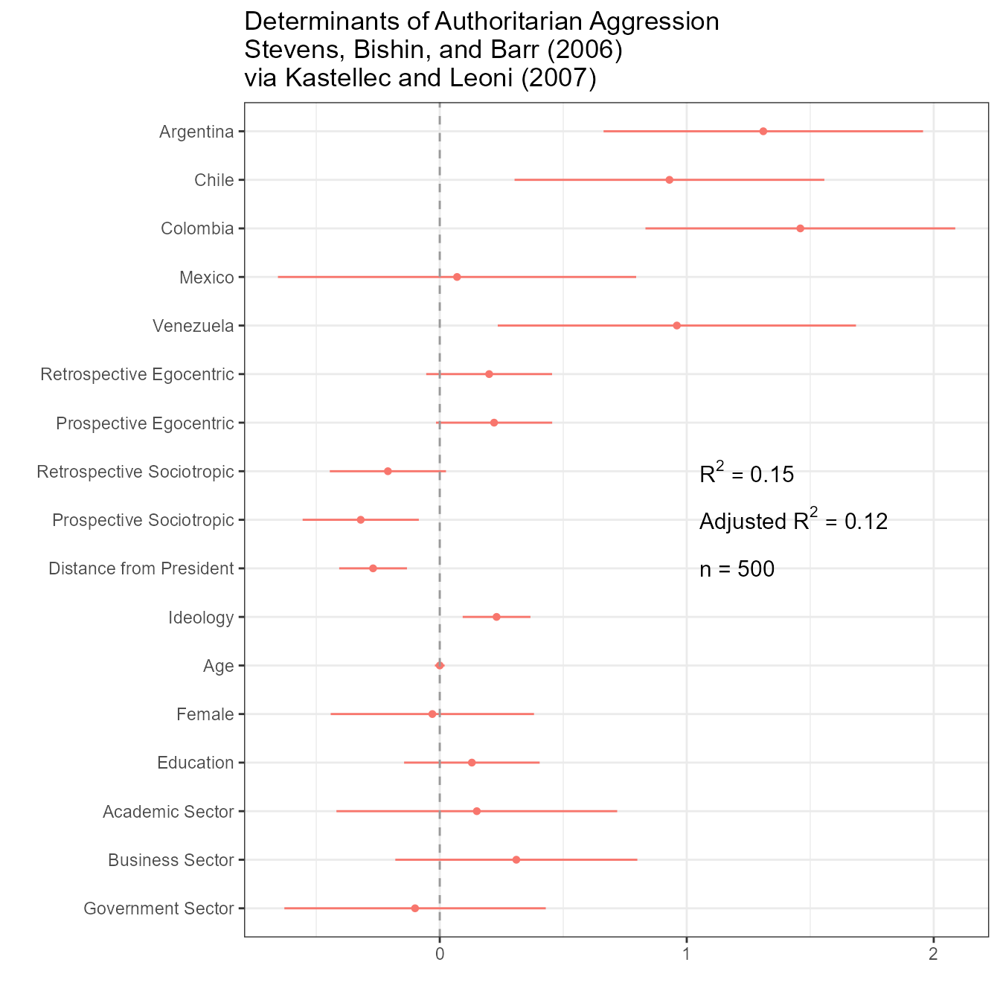
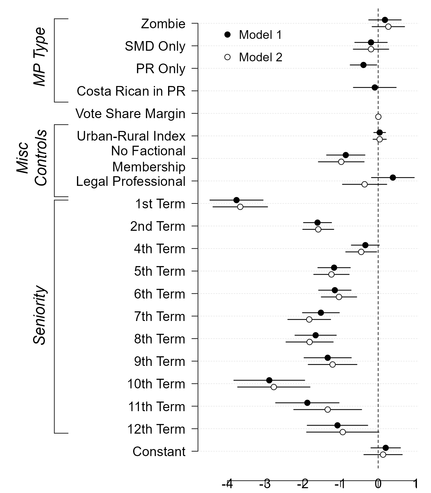
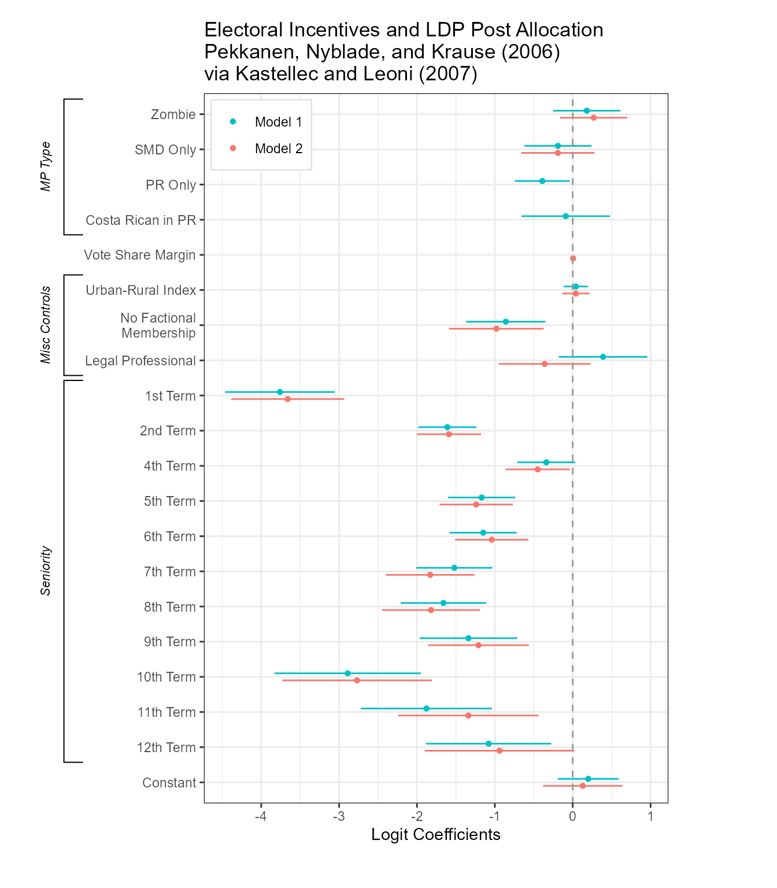
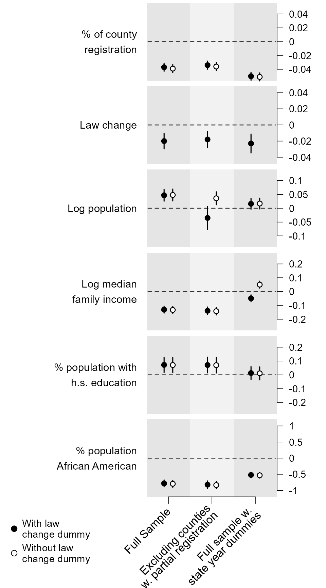
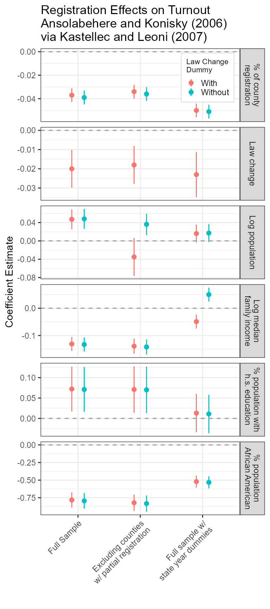

vignettes/kl2007_examples.Rmd
kl2007_examples.RmdI have been a big fan of Kastellec and Leoni
(2007) since it came out, and by putting their code
for creating graphs from actually-published tables online, the
authors allowed me and many others to adapt it for our own needs. But
there can be no doubt that the code is cumbersome and that it takes a
lot of fiddly work to get it to produce the desired results, work that
likely contributes to the continued reliance in political science on
tables to present regression results. As they acknowledged then, “it
simply takes more work to produce graphs” than tables (Kastellec and Leoni 2007, 757). Just eight-plus
years later(!), the dotwhisker package, building on many
other developments in the R ecosystem, arrived to make
producing effective plots of regression results nearly effortless.
Below, I present their original code for their three examples of
plotting regression results, along with similar plots done using
dotwhisker. I hope you’ll agree that the latter plots are
not only much easier to make, but also—thanks to Hadley Wickham’s (2009) ggplot—better looking (and
more easily further customizable).
Kastellec and Leoni’s original code:
#Create vectors for coefficients, standard errors and variable names
#we place coefficient as last element in each vector rather than 1st
#since it is least important predictor, and thus we place it at the bottom of the graph
#note: we exclude the constant, since it is substantively meaningless
coef.vec <- c( 1.31, .93, 1.46, .07, .96, .2, .22, -.21, -.32, -.27,.23,
0, -.03, .13, .15, .31, -.10)
se.vec <- c( .33, .32, .32, .37, .37, .13, .12, .12, .12, .07, .07, .01, .21,
.14, .29, .25, .27)
var.names <- c("Argentina", "Chile", "Colombia", "Mexico", "Venezuela", #for longer names, we split into 2 lines using "\n" function
"Retrospective Egocentric", "Prospective Egocentric",
"Retrospective Sociotropic", "Prospective Sociotropic",
"Distance from President", "Ideology", "Age", "Female", "Education",
"Academic Sector", "Business Sector", "Government Sector")
y.axis <- c(length(coef.vec):1)#create indicator for y.axis, descending so that R orders vars from top to bottom on y-axis
par(mar=c(2, 13, 0, 0))#set margins for plot, leaving lots of room on left-margin (2nd number in margin command) for variable names
plot(coef.vec, y.axis, type = "p", axes = F, xlab = "", ylab = "", pch = 19, cex = 1.2,#plot coefficients as points, turning off axes and labels.
xlim = c(-2,2.5), xaxs = "r", main = "") #set limits of x-axis so that they include mins and maxs of
#coefficients + .95% confidence intervals and plot is symmetric; use "internal axes", and leave plot title empty
#the 3 lines below create horiztonal lines for 95% confidence intervals, and vertical ticks for 90% intervals
segments(coef.vec-qnorm(.975)*se.vec, y.axis, coef.vec+qnorm(.975)*se.vec, y.axis, lwd = 1.5)#coef +/-1.96*se = 95% interval, lwd adjusts line thickness
axis(1, at = seq(-2,2,by=.5), labels = NA, tick = T,#draw x-axis and labels with tick marks
cex.axis = 1.2, mgp = c(2,.7,0))#reduce label size, moves labels closer to tick marks
axis(1, at = seq(-2,2,by=1), labels = c(-2, -1, 0, 1,2), tick = T,#draw x-axis and labels with tick marks
cex.axis = 1.2, mgp = c(2,.7,0))#reduce label size, moves labels closer to tick marks
axis(2, at = y.axis, label = var.names, las = 1, tick = T, mgp = c(2,.6,0),
cex.axis = 1.2) #draw y-axis with tick marks, make labels perpendicular to axis and closer to axis
segments(0,0,0,17,lty=2) # draw dotted line through 0
#box(bty = "l") #place box around plot
#use following code to place model info into plot region
x.height <- .57
text(x.height, 10, expression(R^{2} == .15), adj = 0, cex = 1) #add text for R-squared
text(x.height, 9, expression(paste("Adjusted ", R^{2} == ".12", "")), adj = 0, cex = 1)#add text for Adjusted-R-squared
text(x.height, 8, "n = 500", adj = 0, cex = 1)#add text for sample sizeRedone using dotwhisker:
#install.packages("dotwhisker") # uncomment to install from CRAN
library(dplyr)
library(dotwhisker)
library(dplyr)
# Format data as tidy dataframe
results_df <- data.frame(term=var.names, estimate=coef.vec,
std.error=se.vec)
# Draw dot-and-whisker plot
results_df %>% dwplot(show_stats = FALSE) + theme_bw() + theme(legend.position="none") +
ggtitle("Determinants of Authoritarian Aggression\nStevens, Bishin, and Barr (2006)\nvia Kastellec and Leoni (2007)") +
geom_vline(xintercept = 0, colour = "grey60", linetype = 2) +
annotate("text", x = 1.05, y = 10, size = 4, hjust = 0,
label = "R^2 == .15", parse = TRUE) +
annotate("text", x = 1.05, y = 9, size = 4, hjust = 0,
label = "Adjusted~R^2 == .12", parse = TRUE) +
annotate("text", x = 1.05, y = 8, size = 4, hjust = 0,
label = "n = 500") 
Kastellec and Leoni’s original code:
#Create Vectors for coefs and standard errors for each model, and variable names
#note that we exclude "margin squared" since it doesn't appear in either model
coef.matrix <- matrix(c(-.039, NA, .048, -.133, .071, -.795, 1.47,
-.036, NA, .036, -.142, .07, -.834, 1.70,
-.051, NA, .017, .05, .011, -.532, .775,
-.037, -.02, .047, -.131,.072, -.783, 1.45,
-.034, -.018, -.035, -.139, .071, -.822, 1.68,
-.05, -.023, .016,-.049, .013, -.521, .819),nr=7)
## R2 of the models
R2<- c(0.910, 0.910, 0.940, 0.910, 0.910, 0.940)
##standard error matrix, n.variables x n.models
se.matrix <- matrix(c(.003, NA, .011, .013, .028, .056, .152, .003, NA, .012, .014, .029, .059, .171, .003, NA,
.01, .013, .024, .044, .124, .003, .005, .011, .013, .028, .055, .152, .003, .005, .021, .014,
.029, .059, .17, .003,.006, .01, .013, .024, .044, .127),nr=7)
##variable names
coef.vec.1<- c(0.18, -0.19,-0.39,-0.09, NA, 0.04,-0.86, 0.39,-3.76, -1.61,
-0.34, -1.17, -1.15,-1.52, -1.66, -1.34,-2.89,-1.88,-1.08, 0.20)
se.vec.1 <- c(0.22, 0.22, 0.18,.29, NA, 0.08,0.26,0.29,0.36,.19,0.19, 0.22,
0.22,0.25,0.28,0.32,0.48, 0.43,0.41, 0.20)
coef.vec.2 <- c(0.27,-0.19, NA, NA, 0.005, 0.04,-0.98,-.36,-3.66, -1.59,
-0.45, -1.24, -1.04, -1.83, -1.82, -1.21, -2.77, -1.34, -0.94, 0.13)
se.vec.2 <- c(0.22,0.24, NA, NA, 0.004, 0.09 , .31 , .30 , .37 , .21 , .21 , .24 , .24,
.29 , .32 , .33 , .49 , .46 , .49 , .26)
var.names <- c("Zombie" , "SMD Only", "PR Only", "Costa Rican in PR",
"Vote Share Margin", "Urban-Rural Index","No Factional\nMembership",
"Legal Professional", "1st Term", "2nd Term", "4th Term",
"5th Term","6th Term","7th Term","8th Term","9th Term","10th Term",
"11th Term","12th Term", "Constant")
y.axis <- length(var.names):1#create indicator for y.axis, descending so that R orders vars from top to bottom on y-axis
adjust <- .15 #create object that we will use to adjust points and lines up and down to distinguish between models
layout(matrix(c(2,1),1,2), #in order to add variable categories and braces to left side of plot,
widths = c(1.5, 5))#we use layout command, create a small second panel on left side.
#using c(2,1) in matrix command tells R to create right panel 1st
#layout.show(2) #can use this command to check results of layout command (but it must be commented out when creating PDF).
par(mar=c(2,8,.5,1), lheight = .8)#set margins for regression plot
plot(coef.vec.1, y.axis+adjust, type = "p", axes = F, xlab = "", ylab = "", pch = 19, cex = 1.2, #plot model 1 coefs using black points (pch = 19, default = black), adding the "adjust amount" to the y.axis indicator to move points up
xlim = c(min((coef.vec.1-qnorm(.975)*se.vec.1 -.1), (coef.vec.2-qnorm(.975)*se.vec.2 -.1), na.rm = T), #set xlims at mins and maximums (from both models) of confidence intervals, plus .1 to leave room at ends of plots
max((coef.vec.1+qnorm(.975)*se.vec.1 -.1), (coef.vec.2+qnorm(.975)*se.vec.2 -.1), na.rm = T)), #use na.rm=T since vectors have missing values
ylim = c(min(y.axis), max(y.axis)), main = "")
axis(1,at = seq(-4,1, by = 1), label = seq(-4,1, by = 1), mgp = c(2,.8,1), cex.axis = 1.3)#add x-axis and labels; "pretty" creates a sequence of equally spaced nice values that cover the range of the values in 'x'-- in this case, integers
axis(2, at = y.axis, label = var.names, las = 1, tick = T, cex.axis =1.3)#add y-axis and labels; las = 1 makes labels perpendicular to y-axis
#axis(3,pretty(coef.vec.1, 3))#same as x-axis, but on top axis
abline(h = y.axis, lty = 2, lwd = .5, col = "light grey")#draw light dotted line at each variable for dotplot effect
#box(bty="l")#draw box around plot
segments(coef.vec.1-qnorm(.975)*se.vec.1, y.axis+adjust, coef.vec.1+qnorm(.975)*se.vec.1, y.axis+adjust, lwd = 1.3)#draw lines connecting 95% confidence intervals
abline(v=0, lty = 2) # draw dotted line through 0 for reference line for null significance hypothesis testing
#add 2nd model
#because we are using white points and do want the lines to go "through" points rather than over them
#we draw lines first and the overlay points
segments(coef.vec.2-qnorm(.975)*se.vec.2, y.axis-adjust, coef.vec.2+qnorm(.975)*se.vec.2, y.axis-adjust, lwd = 1.3)#draw lines connecting 95% confidence intervals
points(coef.vec.2, y.axis-adjust, pch = 21, cex = 1.2, bg = "white" ) #add point estimates for 2nd model; pch = 21 uses for overlay points, and "white" for white color
#add legend (manually) to identify which dots denote model 1 and which denote model 2
#legend(-4.5, 20, c("Model 1", "Model 2"), pch = c(19,21),bty = "n")
points(-4, 19.5, pch = 19, cex = 1.2)
text(-3.7, 19.5, "Model 1", adj = 0,cex = 1.2)#left-justify text using adj = 0
points(-4, 18.5, pch = 21,cex = 1.2)
text(-3.7, 18.5, "Model 2", adj = 0,cex = 1.2)#left-justify text using adj = 0
#Create Variable Categories and Braces to go in 2nd plot
par(mar=c(2,0,.5,0)) #set margins--- bottom (1st number) and top (3rd number) must be the same as in 1st plot
plot(seq(0,1,length=length(var.names)), y.axis, type = "n", axes = F, xlab = "", ylab = "")#call empty plot using type="n"
#use a sequence of length 20 so that x and y have same length
left.side <- .55#use this to manipulate how far segments are from y-axis
#note: getting braces and text in proper place requires much trial and error
segments(left.side,20.2,left.side,16.5) #add brackets around MP Type vars
segments(left.side,20.2,left.side+.15,20.2) #1 segment at a time
segments(left.side,16.5,left.side+.15,16.5)
text(.4, 18.5, "MP Type", srt = 90, font = 3, cex = 1.5)#Add text; "srt" rotates to 90 degrees, font = 3 == italics
#don't add "Electoral Strength" since it's only 1 variable
segments(left.side,15.5,left.side,12.3) #add brackets around "Misc Controls"
segments(left.side,15.5,left.side+.15,15.5) #one segment at a time
segments(left.side,12.3,left.side+.15,12.3)
text(.3, 14, "Misc\nControls", srt = 90, font = 3, cex = 1.5)#Add text; "srt" rotates to 90 degrees, font = 3 == italics
segments(left.side,12.15,left.side,1.8) #add brackets around "Seniority"
segments(left.side,12.15,left.side+.15,12.15) #one segment at a time
segments(left.side,1.8,left.side+.15,1.8)
text(.4, 7, "Seniority", srt = 90, font = 3, cex = 1.5)#Add text; "srt" rotates to 90 degrees, font = 3 == italics
Redone using dotwhisker:
# Format data as tidy dataframe
results_df <- data.frame(term = rep(var.names, times = 2),
estimate = c(coef.vec.1, coef.vec.2),
std.error = c(se.vec.1, se.vec.2),
model = c(rep("Model 1", 20), rep("Model 2", 20)),
stringsAsFactors = FALSE)
# Draw dot-and-whisker plot
p <- dwplot(results_df, show_stats = FALSE) +
theme_bw() +
theme(legend.justification=c(.02, .993), legend.position=c(.02, .99),
legend.title = element_blank(), legend.background =
element_rect(color="gray90")) +
xlab("Logit Coefficients") +
geom_vline(xintercept = 0, colour = "grey60", linetype = 2) +
ggtitle("Electoral Incentives and LDP Post Allocation\nPekkanen, Nyblade, and Krause (2006)\nvia Kastellec and Leoni (2007)")
# Add brackets
p %>% add_brackets(list(c("MP Type", "Zombie", "Costa Rican in PR"),
c("Misc Controls", "Urban-Rural Index", "Legal Professional"),
c("Seniority", "1st Term", "12th Term")))
Kastellec and Leoni’s original code:
library(grid)
##point estimates, in a n.variables, n.variables x n.models
coef.matrix <- matrix(c(-.039, NA, .048, -.133, .071, -.795, 1.47,
-.036, NA, .036, -.142, .07, -.834, 1.70,
-.051, NA, .017, .05, .011, -.532, .775,
-.037, -.02, .047, -.131,.072, -.783, 1.45,
-.034, -.018, -.035, -.139, .071, -.822, 1.68,
-.05, -.023, .016,-.049, .013, -.521, .819),nr=7)
## R2 of the models
R2<- c(0.910, 0.910, 0.940, 0.910, 0.910, 0.940)
##standard error matrix, n.variables x n.models
se.matrix <- matrix(c(.003, NA, .011, .013, .028, .056, .152, .003, NA, .012, .014, .029, .059, .171, .003, NA,
.01, .013, .024, .044, .124, .003, .005, .011, .013, .028, .055, .152, .003, .005, .021, .014,
.029, .059, .17, .003,.006, .01, .013, .024, .044, .127),nr=7)
##variable names
varnames<- c("% of county\nregistration", "Law change", "Log population", "Log median\nfamily income",
"% population with\nh.s. education" ,"% population\nAfrican American" ,"Constant")
##exclude intercept
coef.matrix<-coef.matrix[-(7),]
se.matrix<-se.matrix[-7,]
## each panel has at most six models, plotted in pairs.
## in each pair, solid circles will be the models with "law change" in the specification
## empty circles, those without "law change"
##we are making a list, define it first as empty
Y1 <- vector(length=0,mode="list")
#estimates with law change (in the 4th to 6th columns)
Y1$estimate <- coef.matrix[,4:6]
##95% confidence intervals
Y1$lo <- coef.matrix[,4:6]-qnorm(0.975)*se.matrix[,4:6]
Y1$hi <- coef.matrix[,4:6]+qnorm(0.975)*se.matrix[,4:6]
##90% confidence intervals
Y1$lo1 <- coef.matrix[,4:6]-qnorm(0.95)*se.matrix[,4:6]
Y1$hi1 <- coef.matrix[,4:6]+qnorm(0.95)*se.matrix[,4:6]
##name the rows of Y1 estimate
rownames(Y1$estimate) <- varnames[-7] ##no intercept
#estimates without law change
Y2 <- vector(length=0,mode="list")
Y2$estimate <- coef.matrix[,1:3]
Y2$lo <- coef.matrix[,1:3]-qnorm(.975)*se.matrix[,1:3]
Y2$hi <- coef.matrix[,1:3]+qnorm(.975)*se.matrix[,1:3]
Y2$lo1 <- coef.matrix[,1:3]-qnorm(.95)*se.matrix[,1:3]
Y2$hi1 <- coef.matrix[,1:3]+qnorm(.95)*se.matrix[,1:3]
rownames(Y2$estimate) <- varnames[-7]
##code from http://svn.tables2graphs.com/tables2graphs/Rcode/plotReg.R
##The main function is plot.reg. It is called as follows
plot.reg <- function(Y,
#a list composed by three or five matrices, all k x m.
#where k is the number of independent variables
#and m is the number of models
#the matrices are: estimate, lo and hi;
#and optionally lo1 and hi1
#lo and hi are the low and upper bounds of the
#confidence intervals
#similarly
#lo1 and hi1 are the inner confidence intervals
#which will be plotted as cross hairs
Y2=NULL,
#specified just as Y
#so one can plot the models in pairs (see examples)
legend=NULL,
#if there both Y and Y2 are specified, legend
#is an optional character vector of length 2
#giving the legends for Y and Y2
print=TRUE, # print the plot or just create the object
refline=NA, # a vector with the reference lines for each independent variable
# put NA if you don't want ref lines
hlast=.1, # the amount of space (in proportion) left at the bottom of the graph
# for the x-axis labels
lwd.fact=1,
# a multiplier for the line width and character size
length.arrow=unit(0,"mm"),
# length of the cross hair
widths=c(.45,.45,.1),
# widths in proportion of the graph.
# (space for the independent variable labels,
# space for the panels,
# space for the y-axis labels)
rot.label.y=0, # rotation of the independent variable labels
just.label.y="right", # justification of the independent variable labels
pos.label.y=.97, # x position of the independent variable labels
pch.size=0.5, # size of the symbols
h.grid=FALSE, # plot horizontal grid
v.grid=FALSE, # plot vertical grid
expand.factor=0.25, # factor by which to extend the plot range
expand.factor2=0.1, # factor by which to extend the plot range
leg.mult=.7, #rel size of legend
leg.fontsize=8, ## font size of legend
yaxis.at=NULL, ## list with y axis tick-mark points,
ylabel=NULL, ## list with y axis labels
##with length equal to the number of plots
... # other options passed to the grid.Vdotplot function
) {
## the function gets the variable names from Y$estimate rownames
label.vec.vars <- rownames(Y$estimate)
## number of independent variables
n.plots <- nrow(Y$estimate)
if ((!is.null(yaxis.at))&(length(yaxis.at)!=n.plots)) {
stop("length of yaxis.at must equal the number of plots")
}
hbet <- .01 # amound of vertical space between plots
hit <- (1-hlast-hbet*n.plots)/n.plots #height of each plot
sp.now <- 0 #i f sp.now > 0, the x-axis with labels is plotted
index <- seq(1,n.plots*2,2) # index of the plots and between spaces
grid.newpage() # create a new page
##a frame graphical object
## it has k*2 vertical slots (one for each variable + one for each space between plots)
fg <- frameGrob(layout=grid.layout(n.plots*2,
## and 3 horizontal slots (space for ind. variables labels,
## space for plots, space for yaxis labels)
3,widths=unit(widths,"npc"),
heights=unit(c(rep(c(hit,hbet),n.plots-1),hit,hlast),"npc")))
## loop to create panels
## j indexes independent variables
j <- 1
for (i in index) { ## i is the vertical slot position
#create a dataframe with the data to plot now
Y.now <- data.frame(estimate=Y$estimate[j,],
lo=Y$lo[j,],
hi=Y$hi[j,],
lo1=Y$lo1[j,],
hi1=Y$hi1[j,])
##similartly for Y2
if (!is.null(Y2)) Y2.now <- data.frame(estimate=Y2$estimate[j,],
lo=Y2$lo[j,],
hi=Y2$hi[j,],
lo1=Y2$lo1[j,],
hi1=Y2$hi1[j,])
else Y2.now <- NULL
## if it is the bottom row, set sp.now to a positive value
if (i==max(index)) sp.now <- .1
##are we drawing a reference line?
drawRef <- !is.na(refline[j])
##place the plot
##the actual plot object is created by the function grid.Vdotplot
fg <- placeGrob(fg,
grid.Vdotplot(Y.now,
Y2.now,
sp=c(.1,sp.now),draw=FALSE,lwd.fact=lwd.fact,
refline=ifelse(drawRef,refline[j],0) ## if refline is NA put anything in place
,drawRef=drawRef,
length.arrow=length.arrow,
pch.size=pch.size,
h.grid=h.grid,
v.grid=v.grid,
expand.factor=expand.factor,
expand.factor2=expand.factor2,
aty=yaxis.at[[j]],
labely=ylabel[[j]],
...)
,col=2,row=i)
##the independent variables labels
fg <- placeGrob(fg,textGrob(x=pos.label.y,label.vec.vars[j]
,rot=rot.label.y,gp=gpar(cex=.75*lwd.fact),just=just.label.y
),col=1,row=i)
j <- j+1
}
## if Y2 exists and a legend is specified, draw it using the legendGrob function
if (!is.null(Y2)&!is.null(legend)) {
fg <- placeGrob(fg,legendGrob(c(21,21),legend,cex=leg.mult,leg.fontsize=leg.fontsize,fill=c("black","white")),col=1,row=i+1)
}
if (print) {
grid.arrange(fg)
} else {
## if we are not printing, return the graphical object
fg
}
}
### grid.Vdotplot is what actually draws the plots
### the arguments are explained in the plot.reg function
grid.Vdotplot <- function(Y,Y2=NULL,x=NULL,sp=c(.1,.1),draw=TRUE,refline=0,label.x=NULL,drawRef=TRUE,lwd.fact=0.35,length.arrow=0,pch.size=0.5,h.grid,v.grid,y1y2sep=.1,expand.factor,expand.factor2,aty=NULL,labely=NULL) {
## function to plot point estimates
estimates.grob <- function(x, #x coordinates
Y, #Y$estimate has the y coordinates
fill="black" #color to fill the symbol
) {
## pointsGrob is a grid function
pointsGrob(x,Y$estimate,pch=21,size=unit(pch.size,"char"),gp=gpar(fill=fill,lwd=lwd.fact))
}
## function to plot confidence intervals
ci.grob <- function(ylo,yhi,x,lwd=2.5,name="ci",plot.arrow=FALSE) {
##do we want the cross hairs at the ends?
if (plot.arrow) {
arrow.now <- arrow(angle=90,length=length.arrow,ends="both")
} else {
arrow.now <- NULL
}
## use the segmentsGrob function of grid to plot the error bars
segmentsGrob(x0=x,x1=x,y0=ylo,y1=yhi,
default.units="native",
name=name,gp=gpar(lwd=lwd)
,arrow=arrow.now
)
}
if (is.null(aty)) {
## tick-mark not supplied
## calculate y axis ticks (and labels)
## create a vector with all values in the plot
aty <- unique(c(unlist(Y),unlist(Y2),refline))
## if there is a refline, we want to make the plot symmetric around it
##aty <- pretty(aty,5,min.n=5,high.u.bias=5)
if (!is.na(refline)) {
##maximum distance
##mdist <- max(abs(aty-refline),na.rm=TRUE)
aty <- pretty(aty,2,min.n=2,high.u.bias=1)
##cat(aty,"is aty a \n")
aty <- unique(sort(c(aty,2*refline-aty)))
##cat(aty,"is aty b \n")
}
else {
aty <- pretty(aty,5,min.n=5,high.u.bias=5)
}
## take out the highest and the lowest value, to minimize whitespace
if (length(aty)>5) {
aty <- aty[-c(1,length(aty))]
r.y <- range.e(aty,expand.factor) ## expand the range, so as to include everything
} else {
r.y <- range.e(aty,expand.factor2)
}
##cat(aty,"is aty c \n")
##aty <- c(aty,-max(abs(aty)),max(abs(aty)))
##r.y <- range(aty)
## make sure we draw the horizontal grid in every interval in the plot
## but not outside the plot area
## some manual adjustment might be necessary
aty <- ifelse(aty<min(r.y)|aty>max(r.y),NA,aty)
} else {
r.y <- range.e(aty,expand.factor) ## expand the range, so as to include everything
}
## x axis. might have to change this. the default is simply
## an index of the models in the x - axis
## later we possibly want to make this continuous
if (is.null(x)) x <- 1:nrow(Y)
##if (is.null(x)) x <- c(.5,1.75,3)
## save x values
x.o <- x
l.x <- length(x)
## if there is no label, we create one with the index
if (is.null(label.x)) label.x <- paste("(",x.o,")",sep="")
## if there is a second set of values create x2=x+e and decrease x to x-e
if (!is.null(Y2)) {
x2 <- x+y1y2sep
x <- x-y1y2sep
}
## horizontal grid
if (h.grid) {
hgrid <- segmentsGrob(x0=unit(rep(0,length(aty)),"npc"),
x1=unit(rep(1,length(aty)),"npc"),
y0=unit(aty,"native"),
y1=unit(aty,"native"),
gp=gpar(lty="dotted",lwd=lwd.fact,col="lightgrey"))
} else {
hgrid <- NULL
}
## vertical grid
if (v.grid) {
## vgrid <- segmentsGrob(y0=unit(rep(0,l.x),"npc"),
## y1=unit(rep(1,l.x),"npc"),
## x0=unit(x.o,"native"),
## x1=unit(x.o,"native"),
## gp=gpar(lty="dotted",lwd=lwd.fact,col="lightgrey"))
vgrid <- rectGrob(y=unit(rep(0.5,l.x),"npc"),
##x=unit(x.o[seq(2,l.x,1)],"native"),
x=unit(x.o,"native"),
width=unit(1,"native"),
gp=gpar(lty="dotted",lty=0,fill=c("gray90","gray95")))
} else {
vgrid <- NULL
}
## ref line
if (drawRef) {
refline <- segmentsGrob(x0=unit(0.01,"npc"),x1=unit(.99,"npc"),y0=unit(refline,"native"),y1=unit(refline,"native"),gp=gpar(lwd=1*lwd.fact,lty="dashed",col="grey20"))
} else {
refline <- NULL
}
## store ci
ci1a <- NULL
ci1b <- NULL
ci2a <- NULL
ci2b <- NULL
points2 <- NULL
## if ncol(Y)=5 there are overlapping CIs. the second one here.
if(ncol(Y)==5) ci1b <- ci.grob(Y$hi1,Y$lo1,x,lwd=.8*lwd.fact,name="ci1b",plot.arrow=TRUE)
## the first one here.
ci1a <- ci.grob(Y$hi,Y$lo,x,lwd=1.2*lwd.fact,name="ci1a")
if (!is.null(Y2)) {
## if ncol(Y2)=5 there are overlapping CIs. the second one here.
if(ncol(Y2)==5) ci2b <- ci.grob(Y2$hi1,Y2$lo1,x2,lwd=.8*lwd.fact,name="ci2b",plot.arrow=TRUE)
## the first one here.
ci2a <- ci.grob(Y2$hi,Y2$lo,x2,lwd=1.2*lwd.fact,name="ci2a")
## point estimates here
points2 <- estimates.grob(x2,Y2,fill="white")
}
if (is.null(labely)) {
labely <- aty
##print(paste("labely is ",labely,is.null(labely)))
}
gplot <- with(Y,
## gTree is a graphical object with the whole plot
gTree(
children=gList(
hgrid,vgrid,
refline,
ci1a,
ci1b,
estimates.grob(x,Y),
## if Y2
ci2a,
ci2b
,points2
## box/rectangle around the plot area
##,rectGrob(gp=gpar(lwd=.5*lwd.fact))
## plot x axis if sp2>0 (we name it xaxis, so we can refer to it later)
,if(sp[2]!=0) xaxisGrob(at=x.o,label=label.x,name="xaxis",
gp=gpar(cex=0.8*lwd.fact,lwd=0.6*lwd.fact))
## plot x axis with no labels if it is not the bottom plot
,if((sp[2]==0)&(!v.grid)) xaxisGrob(at=x.o,label=rep("",length(x.o)),
gp=gpar(cex=0.8*lwd.fact,lwd=0.6*lwd.fact))
## plot y-axis if sp1>0
,if(sp[1]!=0) yaxisGrob(at=aty,label=labely,
gp=gpar(cex=0.7*lwd.fact,lwd=0.6*lwd.fact),main=FALSE,name="yaxis")),
## definition of the viewport (plot area)
vp=viewport(width=unit(1, "npc"),
height=unit(1, "npc"),
##xscale=c(1,nrow(Y)),
xscale=c(1-.5,nrow(Y)+.5),
yscale=r.y
##yscale=c(-.1,.1)
,clip=FALSE)
))
if (draw==TRUE) {
##draw the plot
grid.newpage()
fg <- frameGrob(layout=grid.layout(2,2,widths=unit(c(sp[1],1-sp[1]),"npc"),heights=unit(c(1-sp[2],sp[2]),"npc")))
fg <- placeGrob(fg,gplot,col=2,row=1)
grid.arrange(fg)
} else {
gplot
}
}
##function to create legend (adapted from Murrell R Graphics book)
legendGrob <- function(pch, ## what symbol to use
labels, ## the text
hgap = unit(0.1, "lines"), #horizontal gap
vgap = unit(0.5, "lines"), #vertical gap
default.units = "lines", #default units
vp = NULL, #what viewport to use
cex=1, #character expansion
leg.fontsize=8,
fill=NULL)
{
nkeys <- length(labels)
gf <- frameGrob(vp = vp)
for (i in 1:nkeys) {
if (i == 1) {
symbol.border <- unit.c(vgap, hgap,
vgap, hgap)
text.border <- unit.c(vgap, unit(0,
"npc"), vgap, hgap)
}
else {
symbol.border <- unit.c(vgap, hgap,
unit(0, "npc"), hgap)
text.border <- unit.c(vgap, unit(0,
"npc"), unit(0, "npc"), hgap)
}
gf <- packGrob(gf, pointsGrob(0.5, 0.5,
pch = pch[i],gp=gpar(cex=cex,fill=fill[i])), col = 1, row = i, border = symbol.border,
width = unit(1, "lines"), height = unit(1,
"lines"), force.width = TRUE)
gf <- packGrob(gf, textGrob(labels[i],
x = 0, y = 0.5, just = c("left", "centre"),gp=gpar(fontsize=leg.fontsize,lineheight=.9)),
col = 2, row = i, border = text.border)
}
gf
}
##function to plot the legend
grid.legend <- function(pch, labels, frame = TRUE,
hgap = unit(1, "lines"), vgap = unit(1, "lines"),
default.units = "lines", draw = TRUE, vp = NULL) {
gf <- legendGrob(pch, labels, frame, hgap,
vgap, default.units, vp)
if (draw)
grid.arrange(gf)
gf
}
range.e <- function(x,xp=.1) {
##expand the range by a fixed proportion
r <- range(x,na.rm=TRUE)
r.e <- (r[2]-r[1])*xp
c(r[1]-r.e,r[2]+r.e)
}
## create the graph (do not print it yet)
tmp <- plot.reg(Y1,Y2,#the lists
#the model labels
label.x=c("Full Sample","Excluding counties\nw. partial registration",
"Full sample w. \nstate year dummies"),
## reference lines
refline=c(0,0,0,0,0,0),
## space left in the bottom (for the x-axis labels)
hlast=.15,
## print the graph?
print=FALSE,
## line width / character size multiplier
lwd.fact=1.3,
## length of the cross- hairs
length.arrow=unit(0,"mm"),
## legend
##legend=c("without law change","with law change"),
## widths: variable names, plot size, y-axis
widths=c(.6,.4,.3),
## rotation of the variable name labes
rot.label.y=0,
## justification of the variable name labels
just.label.y="right",
## position (x-axis) of the variable name labels)
pos.label.y=0.95,
## size of the symbol
pch.size=0.6,expand.factor=.2,expand.factor2=0.1,
##legend
legend=c("With law\nchange dummy","Without law\nchange dummy"),leg.mult=.7,
##legend font size
leg.fontsize=11,
v.grid=TRUE,
yaxis.at=list(
NULL,
NULL,
seq(-.1,.1,.05),
seq(-.2,.2,.1),
seq(-.2,.2,.1),
NULL##seq(-1,1,.5)
)
)
## we rotate the labels of the x-axis 45 degrees. The grid utilities allow
## this modification "on the fly", and it is easy if you are careful at naming the paths
tmp <- editGrob(tmp,gPath("xaxis","labels"),rot=45,just="right",gp=gpar(lineheight=.75))
##tmp is the object we have just created,"xaxis" is the name of element in the object with the x-axis
##elements, and "labels" is the actual object in xaxis that we want to rotate
##just is the justification of the text
grid.arrange(tmp) ## print the graph
Redone using dotwhisker:
# Format data as tidy dataframe
model_names <- c("Full Sample\n",
"Excluding counties\nw/ partial registration\n",
"Full sample w/\nstate year dummies\n")
submodel_names <- c("With","Without")
model_order <- c(4, 1, 5, 2, 6, 3)
results_df <- data.frame(term = rep(varnames[1:6], times = 6),
estimate = as.vector(coef.matrix[, model_order]),
std.error = as.vector(se.matrix[, model_order]),
model = as.factor(rep(model_names, each = 12)),
submodel = rep(rep(submodel_names, each = 6), times = 3),
stringsAsFactors = FALSE)
small_multiple(results_df, show_stats = FALSE) +
scale_x_discrete(limits = model_names) + # order the models
theme_bw() + ylab("Coefficient Estimate") +
geom_hline(yintercept = 0, colour = "grey60", linetype = 2) +
theme(axis.text.x = element_text(angle = 45, hjust = 1),
legend.position=c(.97, .99), legend.justification=c(1, 1),
legend.title = element_text(size=8),
legend.background = element_rect(color="gray90"),
legend.spacing = unit(-3, "pt"),
legend.key.size = unit(10, "pt")) +
scale_colour_hue(name = "Law Change\nDummy") +
ggtitle("Registration Effects on Turnout\nAnsolabehere and Konisky (2006)\nvia Kastellec and Leoni (2007)")
Frederick Solt
Department of Political Science,
University of Iowa,
324 Schaeffer Hall,
20 E Washington St, Iowa City, IA, 52242
Email: frederick-solt@uiowa.edu
Website: https://fsolt.org